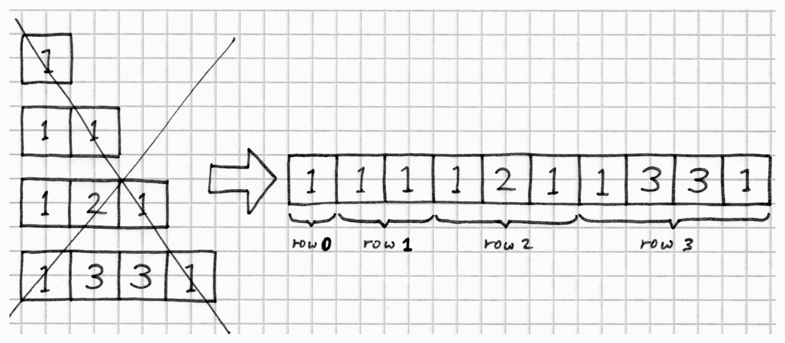

When everything looks like a nail, perhaps you need a spanner

All of the loop-based solutions we've seen so far are constrained by the fact
that they have to return their result as a std::vector<std::vector<uint64_t>.
Each of the rows of the triangle lives in its own std::vector, which has two
important implications:
- We need to perform a memory allocation for every row.
- We have no control over where in memory those allocations are made.
In this section we'll explore one approach for fixing both of those problems. There are also viable solutions using custom allocators for STL containers. I did implement some of those, but I didn't feel I could do justice to them in this write-up, so we'll stick to talking about 'view' types.
C++20's std::span
C++20 introduces std::span,
which allows us to create lightweight 'views' onto underlying data. Whereas
std::string_view offers immutable views onto 'char-like' data, std::span
can point at contiguous arrays of any type. In addition, the underlying data
can optionally be mutated through the view.
Essentially std::span is just a class template which contains a pair of pointers to the
beginning and end of a contiguous chunk of data that it does not own. The reason
std::span is interesting is that it has methods like begin, end, size
and operator[], which allow std::span to be used as if it were any other STL
container. The only difference is that you cannot insert or delete elements.
But you can mutate them.
We don't have access to std::span in C++17, but the
Range-v3 library contains
ranges::span which does a very similar job, so we'll use that instead.
Changing the return type of generate_rows
A key insight is that the original challenge did not require generate_rows to return
a nested std::vector<std::vector<uint64_t>> data structure. It only required
it to return a type which behaves similarly. ranges::span<uint64_t> has all
the necessary methods for iterating over values, so we can change the return
type of the generate_rows function to be std::vector<ranges::span<uint64_t>>
and the unit tests will still compile.
This frees us from the requirement to allocate a separate array of uint64_t
elements for every row of pascal's triangle. Instead we can allocate a single
array of rows * (rows+1) / 2 elements up front, which can accommodate the
whole triangle. Then we just create a lightweight span object for every row,
which points in to the appropriate part of the large array.
There's the added benefit of cache-friendliness here. When the CPU accesses bytes from RAM, it reads them in chunks that are the same width as a cache-line. On current architectures that would typically be 64-bytes at a time. There's also a hardware 'cache prefetcher' that speculatively retrieves chunks of memory before you need them. That works best when you access memory sequentially.
When our triangle row data was stored in individual std::vector instances,
there would be an almost-guaranteed cache-miss when the the algorithm hit the
beginning of each new row. With an up-front allocation of a single contiguous
block of memory, the prefetcher will always have grabbed the memory we need
when we roll on to the next row. That's neat.
Ownership obstacles
The problem with span objects is that they do not own the data they point to.
If you point a span at some piece of memory and then the owner of that memory
goes out of scope then you'll be left with a 'dangling' span. That's nothing
new -- C++ has had the problem of dangling pointers and references right from
the earliest days. But it is something we need to be very careful of when using
'view' objects such as std::span and std::string_view.
We need to somehow bundle the ownership of the triangle data in to the result
type returned by the generate_rows function, but still retain its compatibility
with the unit tests. Here's how we can do that:
class PascalsTriangle {
std::unique_ptr<uint64_t[]> values_; // Underlying data
std::vector<ranges::span<uint64_t>> rows_; // Vector of lightweight row views
public:
PascalsTriangle(uint32_t num_rows); // Constructor fills rows_ with data
// Providing begin() and end() allows the PascalsTriangle type
// to be iterated over.
auto begin() const { return rows_.cbegin(); }
auto end() const { return rows_.cend(); }
};
inline auto generate_rows(uint32_t num_rows) -> PascalsTriangle {
return PascalsTriangle(num_rows);
}
The PascalsTriangle class owns the underlying triangle data in the form of the
values_ array. This could be implemented as a std::vector, but I chose to use a
unique_ptr because it avoids the up-front cost of value-initialisation that
std::vector imposes. But that's a story
for another day.
The sneaky part is that PascalsTriangle has begin() and end() methods that
return iterators into the rows_ vector. That makes the PascalsTriangle type
look sufficiently 'container-like' that it will satisfy the interface requirements
of the unit tests. You can even use range-for loops on it:
PascalsTriangle const triangle = generate_rows(42);
for (auto const& row: triangle) {
...
}
Look! It's more fasterer!
Once the return-type is designed, the rest of the implementation is very similar to all of the other raw-loop solutions. You can see it at FlyingDesitter_arh. I'd like to thank Arnaud Desitter for reminding me to benchmark this.
Now, no matter the size of the triangle, we only ever make two allocations in total. It makes a big difference.
Recall that in the Don't do more work than you need to? section we cooked up a solution called Baseline which was what I consider to be the 'canonical' raw-loop approach to generating Pascal's Triangle. For 64-row triangles, FlyingDesitter_arh is 10 times faster than Baseline. Tasty.
Element throughput (log scale)

Element throughput (linear scale)
{kind=link}
OK, so we're done here? We can all go home?
Not really. This solution may be super-fast, but it has some pretty anti-social storage requirements. The amount of memory it uses is quadratic in the number of rows. And it still suffers from a catastrophic tumble when the triangle spills out of L3 cache. I think we'll grade this one 'B+ (could do better)'.